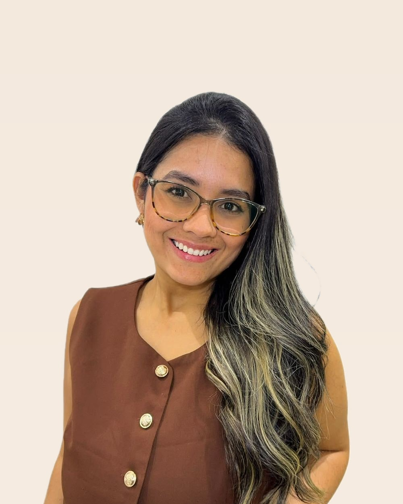
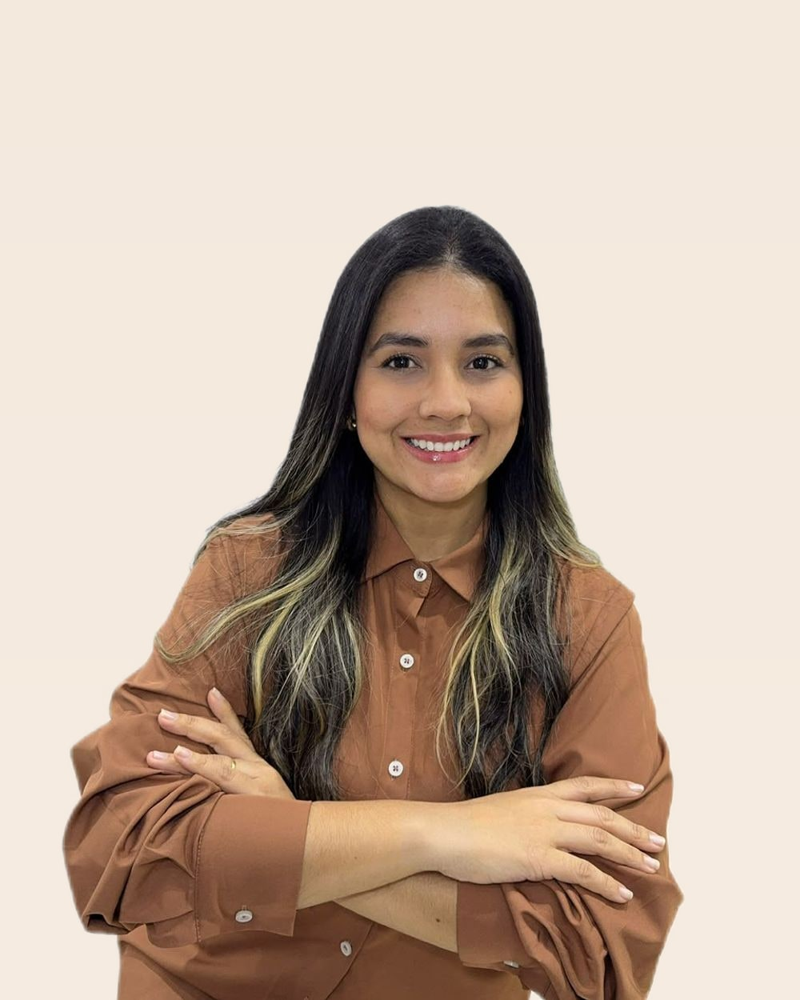

ThayaneTeixeira
Maternidade que inspira, tecnologia que facilita. Radar de beleza e bem estar para lares conectados.
Mamãe do Heitor, Carioca da Gema.

De seller de loja a creator de histórias

Oi, eu sou a Thayane. 💫 Crio vídeos com a cara, a voz e o ritmo de quem realmente usa o produto, sem aquele tom de locução que ninguém aguenta até o final.
- 28 anos
- Casada
- Cristã
- Mãe do Heitor
Antes disso, eu era empreendedora e vendia muito. Mais de 8 anos em vendas me ensinaram a entender pessoas, criar conexões e transformar necessidade em decisão. Quando transformei essa experiência em conteúdo, a venda virou estratégia, a comunicação virou história e o meu jeito de lidar com gente virou conexão.
É assim que eu trabalho: pego uma experiência real e transformo em história que aproxima a marca da pessoa. Da maternidade que inspira à tecnologia que facilita, passando pela beleza e pelo bem-estar que deixam a rotina mais leve. 🤎
Antes, eu vendia produtos. Hoje, crio histórias que fazem as pessoas quererem vivê-los.
- Roteiro aprovado antes de gravarVocê lê, comenta e aprova. Nada de surpresas na hora da entrega.
- Uma rodada de ajuste inclusaAjuste fino de texto, corte ou ritmo, sem custo extra.
- Entrega em até 72 horas úteisPrazo combinado e registrado por escrito em cada projeto.
Um vídeo, uma etapa do funil
Não é o mesmo vídeo mudando de legenda. Cada etapa do funil pede um ângulo, um formato e uma chamada diferentes. Escolha o roteiro que quer ver: topo, meio ou fundo.
Cada roteiro abaixo está pronto para gravar. Troque o link e a capa pelo seu vídeo real quando quiser publicar.
Cinco formatos, um jeito de contar
Storytelling é o meu forte. Os outros quatro existem porque é assim que cada produto entra na minha rotina, mas sempre com história dentro.
Cada nicho, com a minha cara
Escolha um nicho para ver só os vídeos dele. Cada capa abre o vídeo completo no YouTube.
Seis formas de trabalharmos juntos
O que dizem quem já trabalhou comigo
Me conta o que você precisa gravar
Respondo em até 24 horas úteis com um orçamento e um prazo de entrega.
Prefere resolver direto? Me chama por aqui.